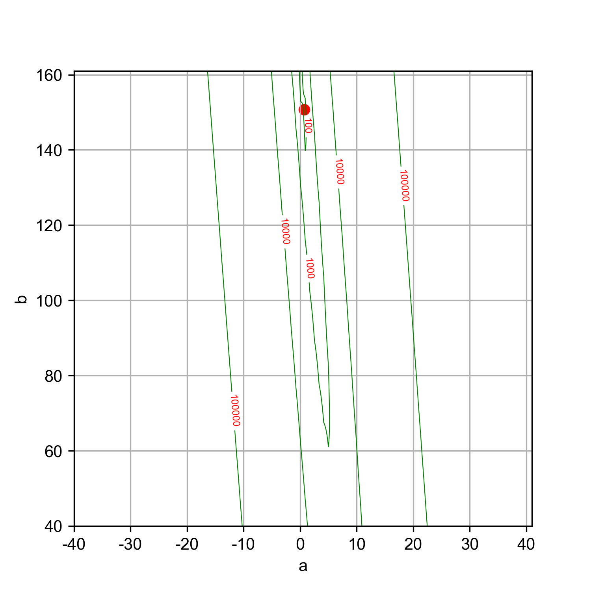

迴歸
Table of Contents

即，根據一組預測特徵（predictor，如里程數、車齡、品牌）來預測目標數值（如二手車車價）1，這個目標數值也是label。
有些迴歸演算法也可以用來分類，例如Logistic，它可以輸出一個數值，以這個數值來表示對應到特定類別的機率，例如，某封email為垃圾郵件的機率為20%、某張圖片為狗的機率為70%。
迴歸問題可再細分為兩類：
- Linear regression:
- 假設輸入變量(x)與單一輸出變量(y)間存在線性關係，並以此建立模型。
- 優點: 簡單、容易解釋
- 缺點: 輸入與輸出變量關係為線性時會導致低度擬合
- 例: 身高與體重間的關係
- Logistic regression
- 也是線性方法，但使用logist function轉換輸出的預測結果，其輸出結果為類別機率(class probabilities)
- 優點: 簡單、容易解釋
- 缺點: 輸入與輸出變量關係為線性時無法處理分類問題
典型迴歸案例: Boston Housing Data
1. 迴歸原理
1.1. Step 1
- Model: \(y = w*x+b\)
- Data: 找一堆現成的資料
1.2. Step 2: Goodness of Function
- Training Data
- Loss function L: 越小越好 input: a function / output: how bad it is
- Pick the “Best: Function \(f* = arg min L(f)\) 上述可以微分來求最佳解，即求 function L 的最小值
- 數值最佳解: Gradient Descent(找拋物面最低點)
2. 線性迴歸:年齡身高預測
2.1. 資料生成
這是當初上帝創造人類時決定人類身高的規則，我們也可以將之視為這組資料的模型，這個規則或模型是很神祕的，等一下我們要假裝我們不知道這個模型的存在，而迴歸的目的就在於想辦法猜出這個規則或模型。
import numpy as np import matplotlib.pyplot as plt n = 10 # 資料筆數 year = 5 + 25 * np.random.rand(n) # 年紀 height = 170 - 108 * np.exp(-0.2 * year) + 4 * np.random.randn(n) print(year) print(height)
[13.3, 16.2, 10.9, 28.7, 19.8, 14.2, 11.7, 26.6, 22.4, 18.3, 19.4] [163.61, 168.53, 155.06, 171.3 , 166.69, 160.98, 158.23, 165.27, 170.83, 161.31, 163.58]
2.2. 查看資料

2.3. 直線模型
我們可以在圖2中畫上無數條線，但，最能代表年齡和身高關係的線應該只有一條，我們要如何找出這條線？
首先，既然我們想以 直線 來表示我們想找的模型或規則，那我們就先把這條直線以下列數學示表示出來: \[y=ax+b\] 或 \[f(x)=ax+b\] 這樣的直線 \(y\) 或函數 \(f(x)\) 有無限多個，迴歸的目的就是要為函數 \(f(x)\) 找出一組最好的參數 \(a,b\)，或是為直線 \(y\) 找到最適合的斜率 \(a\) 和截距 \(b\)。這也是現今許多AI模型的基本精神：找到一組最好的參數，或者說：從無數個可能的模型中挑出最好的一個。
為了從無限多個備選模型中找出最佳的，我們需要有一個評估機制。
2.4. 損失函數
損失函數(loss function)也稱為成本函數(cost function)，就是最常用來定義、衡量模型誤差的方法。以圖3為例，我們可以計算所有原始資料\((x_0, y_0) \dots (x_9, y_9)\) 離這條預測線的距離，這些距離的總和越小，表示預測線離每一點越近，也就是說這個模型越準確。

Figure 3: 直線模型的均方誤差
圖3中的 \(y_i\) 為實際資料 \(x_i\) 對應的結果， 而 \(\hat{y_i}\) 則是將每個實際資料 \(x_i\) 丟入模型後的預測結果，計算 \(y_i\) 與 \(\hat{y_i}\) 誤差的方法稱為 殘差平方和 (Residual Sum of Squares, RSS)，計算公式為 \[ RSS = \sum_{i=1}^{n}(\hat{y_i}-y_i)^2 \] 把RSS再除以n就或是 均方差 (Mean Square Error, MSE)，即 \[ MSE = \frac{1}{n}\sum_{i=1}^{n}(\hat{y_i}-y_i)^2 \] 迴歸的任務就是把RSS或MSE最小化。
如何讓RSS/MSE最小化呢？
2.5. 窮舉所有的可能性
為了找出哪一組參數 \(a,b\) 可以讓模型 \(y=ax+b\) 的預測誤差達到最小，我們可以將一些合理的a,b值可能組合都列出來，如圖4，我們列出了由參數a(-40~40)、參數b(40~160)的所有可能模型，圖中的z軸代表每一種模型產生的誤差。由圖4可以看出兩件事:
- 參數a對模型誤差的影響遠大於參數b
- 當參數a的值接近0時，所生成的模型會有較低的MSE，也就是模型預測能力較好

Figure 4: 不同a,b情況下的均方差
讓我們回憶一下等高線這個東西，如果我們把圖4當成某個山谷的地形圖(z軸為高度)，那我們就可以畫出這個區域的等高線圖5(先別管我是怎麼畫出來的)，從等高線圖5就能大概看出來當a的值約等於0、b的值約等於150時會有最低的SSE(如圖5中的灰點，這是我透過觀落音得到的訊息)。

Figure 5: 不同a,b情況下的MSE(俯視/等高線)
總之，看起來是有辦法找到最佳的模型的，只是有點麻煩…，這個方法稱為梯度下降，在這裡我們先知道有這麼個方法、知道這個方法可以找出最佳模型就好，至於深入探討這個方法是如何運作這件事，等我搞清楚了再說吧(或是等你們上大學再自己去研究)…
2.6. 快速求出最佳解
雖然從無數組 \((a,b)\) 中找出最好的一組看似困難，不過其實許多現成的相關模組已經有了這些功能，例如scikit-learn。以底下的程式為例：
1: import numpy as np 2: from sklearn.linear_model import LinearRegression 3: 4: year = np.array([13.3, 16.2, 10.9, 28.7, 14.2, 11.7, 26.6, 22.4, 18.3, 20.4]).reshape([-1, 1]) 5: height = np.array([163.61, 168.53, 155.06, 168.3 ,158.98, 158.23, 165.27, 170.83, 161.31, 163.58]) 6: 7: model = LinearRegression() 8: model.fit(year, height) 9: 10: slope = model.coef_ 11: intercept = model.intercept_ 12: heightHat = year * slope + intercept 13: 14: print('斜率/Slope:', slope) 15: print('截距/Intercept:', intercept)
斜率/Slope: [0.58182444] 截距/Intercept: 152.74006747354875
在上述程式碼中，真正與計算迴歸有關的只有第7行與第8行， 夠簡單吧，這樣我們就能畫出最佳的一條迴歸線(如圖6):

Figure 6: 線性迴歸求解
2.7. 逐步找出最佳解
雖然我們可以快速的利用如scikit-learn這類第三方模組求出最佳解，但是相信對於有志投入AI領域的你來說，光知道如何快速求解顯然遠遠不夠，讓我們來搞清楚這到底是怎麼完成的。
2.7.1. 隨機的力量
萬事起頭難，要找出最佳的參數組合 \((a,b)\) ，最合理的方式就是我們 閉上眼睛 在圖4中隨意點圈出一個點b \((x_0, y_0)\)，這就是我們的第一步，其結果就如圖7所示。有了這個開頭，我們接下來要做的事就是：
- 找出 一個方法 來判斷要由點 \((x_0, y_0)\) 點沿著這個曲面的 哪一個方向 前進 多遠 ，來到下一點 \((x_1, y_1)\)
- 利用 同一個方法 來判斷接下來要由點 \((x_1, y_1)\) 點沿著這個曲面的 哪一個方向 前進 多遠 ，來到下一點 \((x_2, y_2)\)
- 重複同樣的步驟，直到找到最佳的點 \((x_n, y_n)\) ，也就是這一點

Figure 7: 找出最佳a,b組合的方法
那麼，這個方法
3. 線性迴歸2
手刻 Deep Learning — 第零章 — 線性回歸 原始資料:
Figure 8: Caption
1: import numpy as np 2: import matplotlib.pyplot as plt 3: 4: def gen_data(X, a, b): 5: return X * a + b 6: 7: ## 重新產生X, y，較合理，而非已存在一條線 8: X = np.array(range(1, 10)) 9: y = np.array([27, 35, 40, 50, 66, 60, 76, 88, 90]) 10: #y = gen_data(X, a=8, b=20) 11: 12: plt.scatter(X, y, color='black') 13: plt.plot(X, 1 * X + 1) 14: plt.plot(X, 4 * X + 10) 15: plt.plot(X, 4 * X + 10) 16: plt.plot(X, 8 * X + 30) 17: plt.ylim(0, 121) 18: plt.legend(['Raw Data', 'Line 1', 'Line 2', 'Line 3']) 19: plt.savefig("images/Xyh-1.png", dpi=300) 20: 21: a = 1 22: b = 1 23: yh = a * X + b #y hat 24: 25: 26: plt.plot(X, yh) 27: #plt.savefig("images/Xyh.png", dpi=300) 28: 29: def loss_func(y_true, y_predict): 30: return y_true - y_predict 31: 32: def optimizer(d, loss): 33: return np.mean(d * loss * 0.01) 34: 35: N = 1000 36: for i in range(N): 37: p_y = a * X + b 38: loss = loss_func(y, p_y) 39: a -= optimizer(-2 * X, loss) 40: b -= optimizer(-2, loss) 41: if i % int(N/10) == 0: 42: print('誤差: {:.2f}'.format(np.mean(loss)), '目前 a: {:.2f}, b: {:.2f}'.format(a, b)) 43: 44: yh = a * X + b #y hat 45: #plt.plot(X, yh) 46: #plt.legend(['Target', 'Initialization', 'Optimization']) 47: #plt.savefig("images/Xyh.png", dpi=300)
[[1] [2] [3] [4] [5] [6] [7] [8] [9]] 誤差: 53.11 目前 a: 7.27, b: 2.06 誤差: 2.11 目前 a: 9.84, b: 7.81 誤差: 1.40 目前 a: 9.29, b: 11.26 誤差: 0.93 目前 a: 8.93, b: 13.54 誤差: 0.61 目前 a: 8.69, b: 15.05 誤差: 0.41 目前 a: 8.53, b: 16.06 誤差: 0.27 目前 a: 8.42, b: 16.72 誤差: 0.18 目前 a: 8.35, b: 17.16 誤差: 0.12 目前 a: 8.31, b: 17.45 誤差: 0.08 目前 a: 8.28, b: 17.65
Figure 9: Caption
開始 Linear Regression (線性回歸)
練習投藍的時後，我們需要知道籃筐位置，誤差多少，做出丟球的修正；做 Machine Learning 也是一樣道理，我們需要 :
- 找出誤差
- 做出修正
所以我們這邊帶入兩個觀念:
- loss function (誤差計算，找出誤差)
- optimizer (最佳化方法，做出修正)
我們用程式碼來看 loss function: 其中 loss_func 的 y_true 表示商店的真實價格，y_predict 是我們預測的價格，我們這邊採用 真實價格 減去 預測價格，就是預測的誤差
1: def loss_func(y_true, y_predict): 2: return y_true - y_predict
optimizer: 這邊有個參數叫做 d ，其實他是 partial derivative ，這是微積分的概念。optimizer的修正並非最佳，可以自行修正找出最佳參數
1: def optimizer(d, loss): 2: return np.mean(d * loss * 0.01)
上面就是我們的訓練用程式碼，跑 1000 次訓練，每 100 次 ( N/10 ) 我們印出一次誤差讓我們看看過程 其中： a -= optimizer(-2 * X, loss) b -= optimizer(-2, loss) 這邊就是每次的訓練我們都在調整 a 與 b，就像是我們投籃丟歪球了，每次練習都在調整力道
各位可以試看看將 a 與 b 改成任意數值 ( 不要太過極端以免 overflow )，在這個訓練過程中，不管 a, b 初始是多少，都會逐漸往我們正確答案靠近，為什麼會這樣呢？
這就是微積分的力量
大多的 Machine Learning 也是類似這種方法，不停的 Training ( 訓練 ) 找到答案，微積分這部分日後有空再來解說 XD
微分: https://tree.rocks/deep-learning-from-scratch-introduce-differential-91f5b4400d1a
3.1. sklear版solution
1: import numpy as np 2: X = np.arange(1, 10).reshape(-1, 1) #轉換矩陣形狀以符合sklearn要求 3: y = [27, 35, 40, 50, 66, 60, 76, 88, 90] 4: 5: from sklearn.linear_model import LinearRegression 6: model = LinearRegression() 7: model.fit(X, y) 8: 9: print('Slope:', model.coef_) 10: print('Intercept:', model.intercept_)
Slope: [8.21666667] Intercept: 18.02777777777777
4. BOOK
- Title: Mastering Machine Learning with scikit-learn
- Author: Gavin Hackeling
Footnotes:
Hands-On Machine Learning with Scikit-Learn: Aurelien Geron